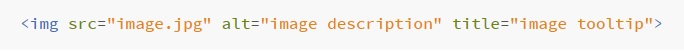

Here we are referring to the title and alt attributes of the "img" tag in an HTML document
The title and alt attributes are sometimes referred to as the title and alt tags, even though they're not technically tags.
What do these attributes look like when written in HTML?
Example:
What is the HTML title attribute?
- Shown as a tooltip when the user hovers over the element with their mouse
- Could contain an extra call-to-action
- Not required, but it can be useful to include
What is the HTML alt attribute?
- Describes the image
- Describes the function of the image on the page
- Used by screen readers to let blind and visually impaired users know what the image is
- Used for SEO (Search Engine Optimization)
- Sometimes referred to as alt text
Why do I need to know about these image attributes?
- The alt attribute is important for SEO
- The alt attribute is important for accessibility purposes
- Blind and visually impaired users won't know what your images are for without an alt attribute
- The title attribute can provide additional useful information to the user
- "Google places a relatively high value on alt texts to determine what is on the image but also to determine the topic of surrounding text."
What if an image on my page is purely for design purposes?
- If possible, images that are purely for design purposes should be in your CSS
- If that's not possible, then you can give the image an empty alt attribute, which will cause screen readers to skip over it
- An empty alt attribute looks like this:
Tips for writing good alt text
- An alt attribute should be fairly long and descriptive - a short sentence
- If a keyword would be useful for finding the image, include it in the alt attribute if you can